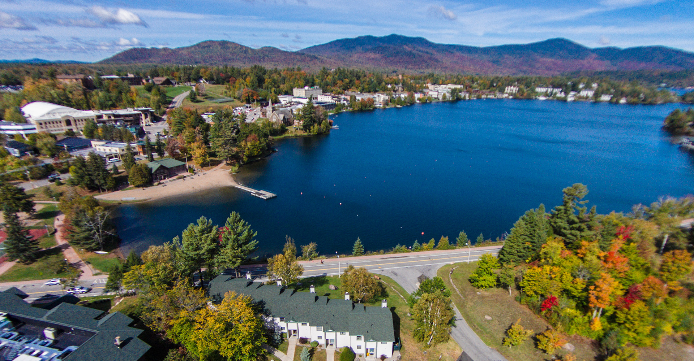
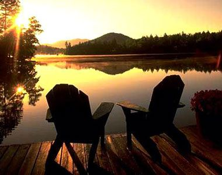

Three separate mountains encompass a wide variety of terrain catering to skiers and riders of all ability levels from comfortable and spacious learning terrain perfect for first-timers, to steeps and bumps for the seasoned expert there is something to satisfy any skiing or riding style!

From the north or south, Hunter is an easy ½ hour ride from the NYS Thruway. Click here for driving directions
Taking the bus or driving are the most recommended ways to reach Hunter Mountain, but you can opt to ride Amtrak to nearby Hudson, NY. For Amtrak schedules and information, visit www.Amtrak.com
Save gas... take the bus. With so many different bus options, you're certain to discover a hassle-free alternative to driving. Here's a list of charter bus companies and tour operators making runs to Hunter Mountain on a regular basis.
The oligotrophic, circumneutral body of water called Mirror Lake is in the Adirondack Mountains in northern New York in the United States. The lake is approximately 124 acres (0.50 km2), with a watershed area of 741 acres (3.00 km2). 27% of the watershed area is developed, 51% is forested, 2% is wetlands, and 20% is surface water. The lake has a maximum depth of 65 feet (20 m) and an average depth of 14 feet (4.3 m). It is located in the village of Lake Placid, near the center of the town of North Elba in Essex County.

Most people choose to drive to Lake Placid due to our close proximity, ease of roads, beautiful landscapes and scenery through the Adirondack Park. For exact driving directions to Lake Placid NY visit our Maps & Directions page.
Railway access via Amtrak is available from New York, Albany and Montreal, with tickets that include a shuttle ride to Lake Placid direct from the Westport Station. Adirondack Trailways also offers service from New York City, Port Authority Terminal and bus terminal points North, with drop-off in the center of Lake Placid and Saranac Lake. 
Small private or corporate aircraft are able to fly directly into Lake Placid Airport. There is also non-stop service via Cape Air commuter service from Boston's Logan Airport into Adirondack Regional Airport. The Boston to Saranac Lake flight is approximately 90 minutes, and there are 4 flight options a day, Adirondack Regional Airport is a 20 minute drive to Lake Placid. There you can arrange for car service pick up, taxi or car rental. Additionally, Lake Placid is approximately a two hour drive from the international airports in Albany, NY, Burlington, VT, and Montreal.

Whiteface Mountain is the fifth-highest mountain in the U.S. state of New York, and one of the High Peaks of the Adirondack Mountains. Set apart from most of the other High Peaks,
the summit offers a 360-degree view of the Adirondacks and clear-day glimpses of Vermont and even Canada,
where the skyscrapers of Montreal, 80 miles (130 km) away, can be seen on a very clear day.
Located in the town of Wilmington, about 13 miles (21 km) from Lake Placid,
the mountain's east slope is home to a major ski area which hosted the alpine skiing competitions of the 1980 Winter Olympics.
Unique among the High Peaks, Whiteface features a developed summit and seasonal accessibility by motor vehicle.
Whiteface Memorial Highway reaches a parking area at an elevation of 4,600 feet (1,400 m),
with the remaining 267 feet (81 m) being obtained by tunnel and elevator.

Take the New York State Thruway (I-87) north to Exit 24 (Albany). Take I-87 north (Adirondack Northway) to Exit 30. Pick up Route 9 north and follow it for two miles to Route 73. Continue on Route 73 for 28 Miles to Lake Placid. Drive time from New York City - 5 hours; Albany - 2 1/2 hours

The Lake Champlain Region is within two hours driving time of three major airports: Albany, NY — car rental information Burlington, VT — car rental information Montreal, Quebec — car rental information